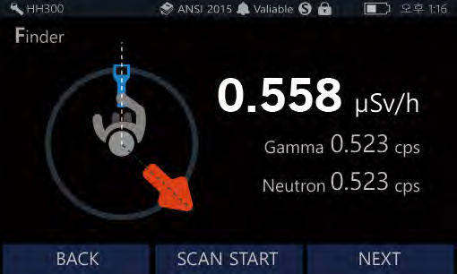
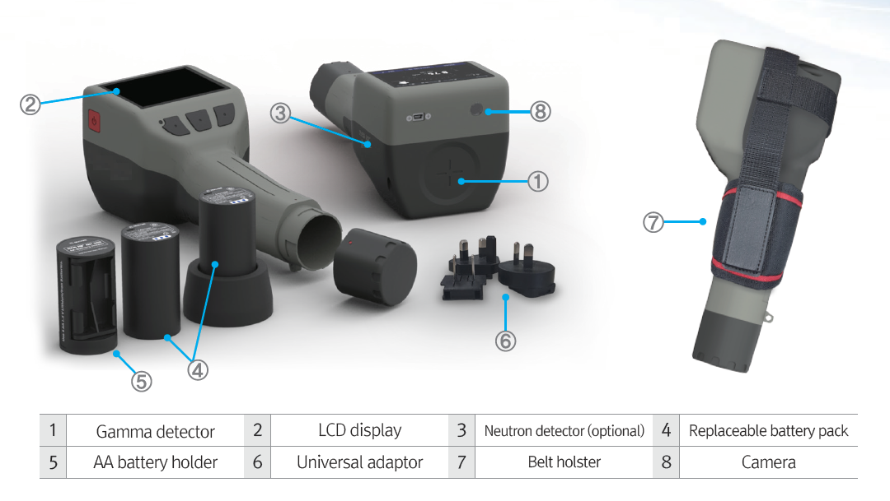
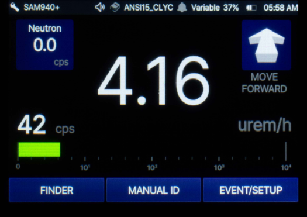
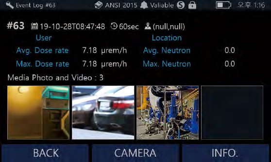
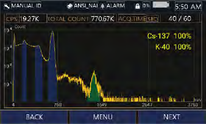
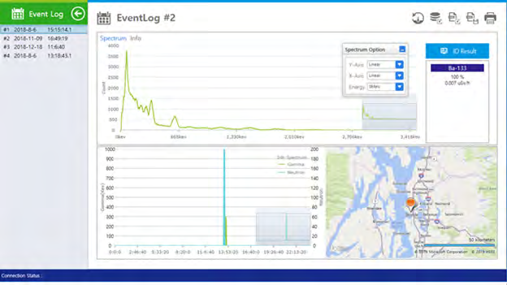
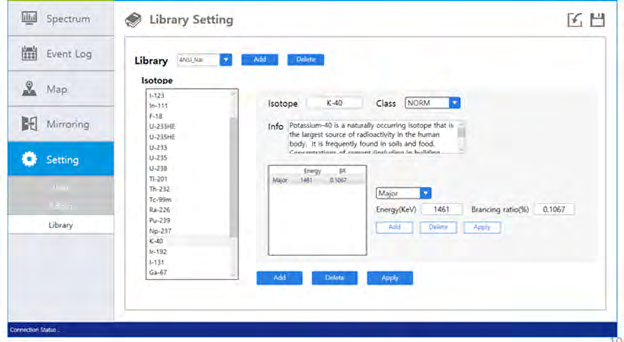
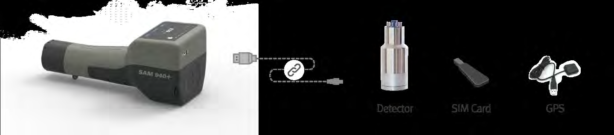

1Introduction
The new SAM 940+ is a re-engineered RIID (Radio Isotope Identification Device) that features an internal detector and is designed to address a growing demand for fast, accurate isotope identification. The new instrument reduces the burden on the operator by leveraging state of the art communication protocols to quickly relay information to a management team. The lightweight design also limits fatigue in long operational scenarios and enables easy transport of your identifier in a belt holster or lanyard. In addition to ANSI compliant spectroscopic results and alarming, the user has quick access to the on-board camera for appending video or images to the spectroscopic reports.
The new design includes some of the most exciting technologies available in a handheld instrument. The internal GPS system includes 66 Tracking Channels (1–10 Hz) to ensure high accuracy in the reported location data. A rechargeable Li-Ion battery allows for 7 hours of continuous use while a AA battery pack clips on for continued use when the internal battery is low. A gyro-sensor embedded in the SAM 940+ gives users immediate directional data to quickly locate and isolate alarming sources. Stand-off detection and ALARA standards are also met using the Smartphone Mirror application, allowing you to operate the unit from a distance. Existing SAM users will appreciate the add-on port, allowing the use of larger detectors, long detector cables or other needed peripherals.
While the front end of the SAM 940+ has been totally reworked for the first responder and inspection agents, the underlying spectroscopy and analysis ensure the health physicists and program management team reliable information. Disposition of non-threat alarms or naturally occurring radiation can be accomplished timely and with high levels of confidence. The exciting new design marries the demanding requests of the Police, Hazmat, Responder and Inspection communities with the performance expectations of the DOE and spectroscopic community.
SAM 940+ Evolution
The 3rd generation SAM is the most compact, lightest hand-held RIID in the world. Compared to its predecessors, the volume and weight is reduced by about 1/3, while retaining all the advanced features from previous generations.
Features
- One Click Reachback
- Built in Camera: Multi-Media Support
- Sourceless Automatic Real-time Stabilization
- Remote Operation and Mirroring Display
- Directional Radiation Detection
- RadResponder Enabled
- Internal Detector
2Detectors & Performance
The SAM 940+ supports a range of gamma scintillator crystals plus a GM pancake probe, with neutron detection available as an internal or external option. Energy resolution is specified at 662 keV.

| Parameter | Specification |
|---|---|
| Gamma detector | 2x2 inch NaI(Tl), CeBr3, LaBr3; 2x1 inch CeBr3 or LaBr3 |
| Neutron detector | 1.5x1.5 or 2x2 CLLBC, CLYC |
| External probe | NaI, CeBr3, LaBr3, 3He and GM Detector (Pancake Probe) |
| Energy range | 20 keV – 10 MeV (Gamma) |
| Linearization | Real-time linearization by firmware |
| Dose rate range | 10 nSv/h – 250 µSv/h (0–10 mR/h) |
| Dose rate range | 10 nSv/h – 100 mSv/h (10 mR/h – 100 R/h) |
| Stabilization | “K-40 Finder”: sourceless automatic real-time stabilization |
| Identification | ANSI N42.34 compatible | ANSI 2015 |
| Library categories | SNM, IND, MED, NORM |
| Typical resolution | NaI(Tl) < 7%, CeBr3 < 5%, LaBr3 < 4% @ 662 keV; CLLBC < 3.5%, CLYC < 5% |
| MCA channel | 11 bit 2048 ch. |
3Specifications
Physical
| Parameter | Specification |
|---|---|
| Dimension | 102 x 243 x 97 (mm) |
| Weight | 1.2 kg |
Environmental
| Parameter | Specification |
|---|---|
| Operating temp | -20° (-4°) – 50° (122°) |
| Relative humidity | 10 to 80%, non condensing |
| Protective rating | IP65 |
| Testing conditions | IEC 62706, EN 61326 |
Battery
| Parameter | Specification |
|---|---|
| Battery | Replaceable Li-ion (2 ea.) |
| Operation time | >7 h in dose rate mode with display back light off, maximum run time: > 7x2 h |
Display
| Parameter | Specification |
|---|---|
| Display | LCD |
| Size | 3.5inch |
| Resolution | 480 x 320, configurable up to 1920x1080 |
Input/output
| Parameter | Specification |
|---|---|
| USB | Micro USB 3.0 |
| Bluetooth | Class 4.0 |
| WLAN | 802.11n Wireless LAN |
Miscellaneous
| Parameter | Specification |
|---|---|
| GPS | 22 tracking, 66 channels, 1–10 Hz |
| CCD camera | CMOS 8MP |
| GYRO sensor | Linearity 0.1 ±% FS |
4Key Features
The SAM 940+ instrument and its accessories are made up of the following labeled components:

| No. | Component |
|---|---|
| 1 | Gamma detector |
| 2 | LCD display |
| 3 | Neutron detector (optional) |
| 4 | Replaceable battery pack |
| 5 | AA battery holder |
| 6 | Universal adaptor |
| 7 | Belt holster |
| 8 | Camera |
Alarm Status

SAM 940+ provides four levels of alarm with intuitive graphical icons. Depending on dose rate and threshold settings, it informs the user ‘move forward’, ‘move back’, ‘in range’ and ‘danger’ based on alarm level.
5One-Click Reachback
SAM 940+ provides a “one-click reachback” solution for data transfer to the RadResponder Network or a command center. The multi-media support, GPS and communication capabilities enable the operator to rapidly deliver a complete, informative and actionable report to reach-back centers.
RadResponder
Integration with FEMA’s free network for logging, transmitting, storing, analyzing, and presenting environmental radiation monitoring data.
Command Center
Event data can be transferred to a command center via Wi-Fi network protocol. Peak ID application SW provides full analysis capability of event data.
6Application Software
Event Log

The EVENT is stored in the instrument and can be quickly emailed to Reachback. The EVENT file includes spectroscopic data as well as general details such as GPS location and time/date.
Finder

The FINDER mode uses a built-in Gyro-Sensor to assist the responder in quickly locating the source of radiation.
High Resolution Camera
The user has quick access to the built in high resolution camera for adding video or images to the spectroscopic report.
Event Playback & Library Editing

An included software package for the PC or APP can analyze the EVENT logs in more detail as well as offer EVENT PLAYBACK. Management teams may wish to modify library data as well. This is possible with the APP or using a PC.

7External Probes & Connectivity
External Probes
The SAM 940+ accepts a range of external probes to extend its capability:
- Finder probe
- External siren for area monitor applications
- Increased sensitivity large volume NaI / plastics
- Special function / X-ray detection
- Internal or external neutron detection options
Connectivity

One of the most advanced features of SAM 940+ is its high connectivity to external devices. It can easily connect to external detectors from BNC only, SIM card for 4G/LTE network and others with the USB port. Connect to external detectors from BNC, SIM cards, GPS and others easily with the front-facing USB port.
8Optional Accessories
| Accessory | Description |
|---|---|
| Case | Pelican Carrying Case |
| Holster | Belt holster |
| Lanyard | Carrying Strap |
| Charger | USB Charger, Vehicle Charger |
| Connection | Mini USB Cable |
| Battery backup | 4 AA alkaline batteries (> 4h backup) |
9Applications
- Homeland Security
- Emergency Response
- Safeguard and Nuclear Security
- Radiological Area Mapping
- Geological Radiation Survey